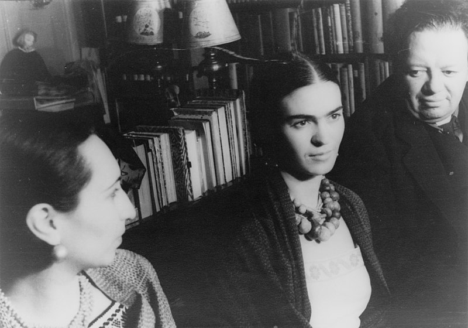

Frida Kahlo
The woman who painted her pain and passion onto canvas

Frida Kahlo (center) and Diego Rivera, 1932, photographed by Carl Van Vechten.
Here's the timeline of Frida Kahlo's life:
- 1907 - Born on July 6 in Coyoacán, Mexico City
- 1922 - Suffers a near-fatal bus accident that leaves her with lifelong health issues and chronic pain
- 1925 - Begins to paint during her recovery, using a specially designed easel that allows her to work in bed
- 1929 - Marries the renowned Mexican muralist Diego Rivera
- 1932 - Creates one of her most famous works, "The Broken Column," reflecting her physical and emotional pain
- 1938 - Becomes a member of the Mexican Communist Party due to her political beliefs and affiliations
- 1940 - Exhibits her artwork in the United States, gaining some recognition but not widespread success
- 1953 - Has her first solo exhibition in Mexico, which receives positive reviews from both critics and the public
- 1954 - Her health deteriorates further, leading to a series of surgeries and medical treatments
- 1955 - Participates in her first solo exhibition in Mexico City but is too ill to attend the opening
- 1957 - Her right leg is amputated due to complications from gangrene
- 1958 - Passes away on July 13 at the age of 47
- 1970s - Gains posthumous recognition as her work becomes a source of inspiration for feminist and LGBTQ+ movements
- 1983 - Hayden Herrera publishes a biography about Kahlo, renewing interest in her life and art
- 2002 - "Frida," a biographical film starring Salma Hayek, introduces her story to a wider audience
- 2020 - Continues to be celebrated as an icon of self-expression, individuality, and resilience in the face of adversity
"Reflecting her own pain and passion onto canvas, Frida Kahlo touches the inner world of humanity through her art, shedding light on its universal experiences."
-- Hayden Herrera, Author of Frida Kahlo's Biography